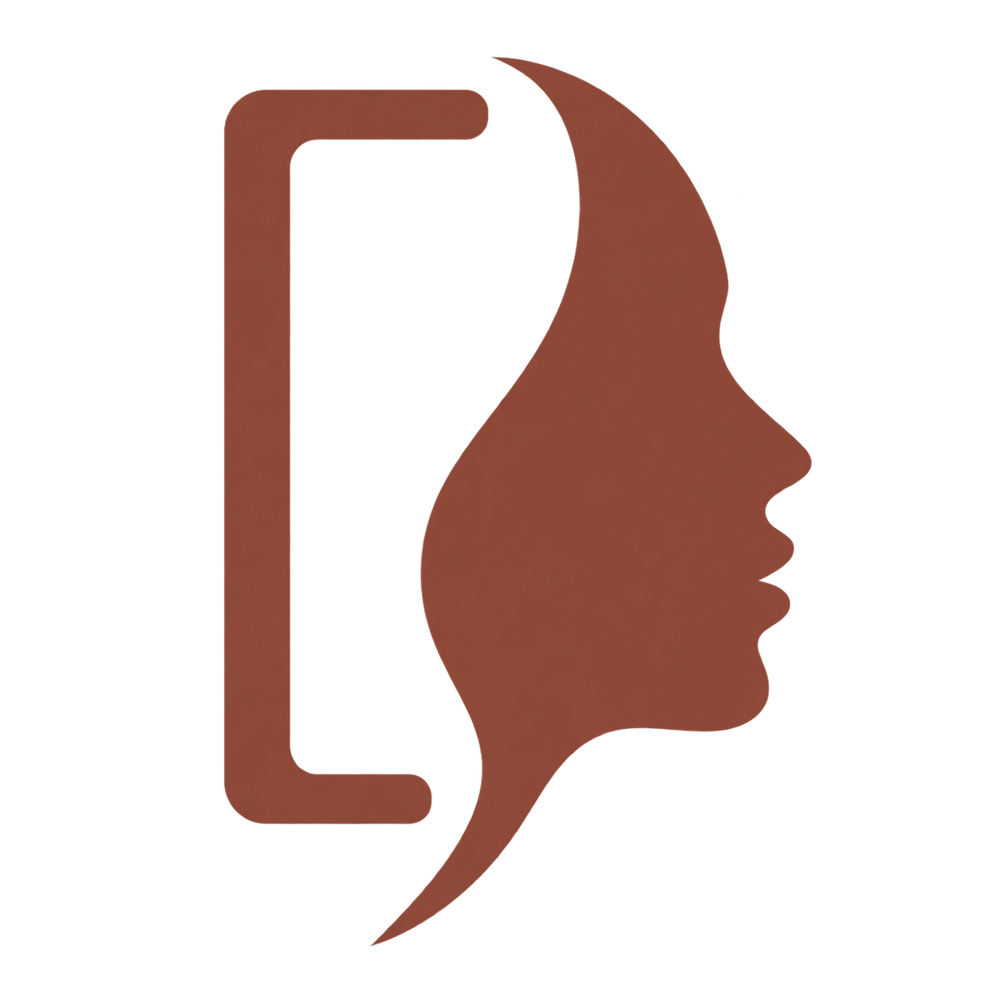

{kind=link}
{kind=link}
Travel-mood illustration
Real photo → environmental portrait. Approved and cleared for publication by the user.

Editorial AvatarPurpose-driven portrait workflow · Codex skill + ChatGPT prompt
Give AI a photo and tell it where the portrait will live. Editorial Avatar clarifies the purpose first, then designs composition, styling, lighting, and palette — like a designer and a photographer in one conversation.
Most avatar tools ask “which style?”. Editorial Avatar asks “where will this portrait live?” — a conference page, a dark-themed team site, and a developer profile each get a different design.
Provide a photo and its use context. If the purpose is unclear, the assistant asks first — then designs composition, styling, lighting, and palette.
Semi-realistic illustration by default; request other art styles, keep glasses, or adjust expressions — and keep iterating on a version you approve.
Circular crops at 40, 64, 128, and 256 px on light and dark backgrounds, so the avatar is checked at the sizes people actually see.
A Codex skill that runs clarification → design → generation → preview end-to-end, and a two-stage ChatGPT prompt that keeps plan and generation separate.
One photo plus where it will be used — “for GitHub and Hugging Face, keep my glasses” is enough to start.
The assistant clarifies the purpose if needed, then designs composition, wardrobe, light, and palette for that context.
Your image-capable Codex or ChatGPT environment produces the portrait. The project brings the workflow, not a model or quota.
Check circular crops at real avatar sizes, then refine the approved version — remove glasses, adjust a smile, restyle for a new context.
Every case shows the input and the result at equal size, with the actual request and generation prompt on record. All portraits were generated by Codex’s built-in image tool.
Real photo → environmental portrait. Approved and cleared for publication by the user.
Approachable, glasses kept. Ink-blue casual wear on a light blue-grey background.
Age, skin tone, and curls kept. Plum jacket on a grey-violet background, calm and warm.
Avatars are seen at 40 px more often than at full size. The bundled tool renders circular crops at 40–256 px on light and dark backgrounds — offline, without modifying or uploading the original.
$skill-installer Install the skill at
https://github.com/xiaofengShi/ai-avatar-skill/tree/main/skills/editorial-avatar
$editorial-avatar This photo is for my GitHub and
Hugging Face avatar. Keep my glasses; design
everything else yourself.Requires image generation in your Codex environment. Full instructions ↗
Paste the plan-stage block, attach a photo and its purpose, review the design plan, then send the generate block. The English wording has not yet been tested in ChatGPT.
The gallery covers six cases: five fictional characters generated in one pass each, one approved real travel photo, and one documented correction round. That is evidence of a workable workflow — not of stable quality or superiority over short prompts.
Full inputs, review notes, and known limits: validation log · assets & licensing.
{kind=link}
{kind=link}
{kind=link}
{kind=link}